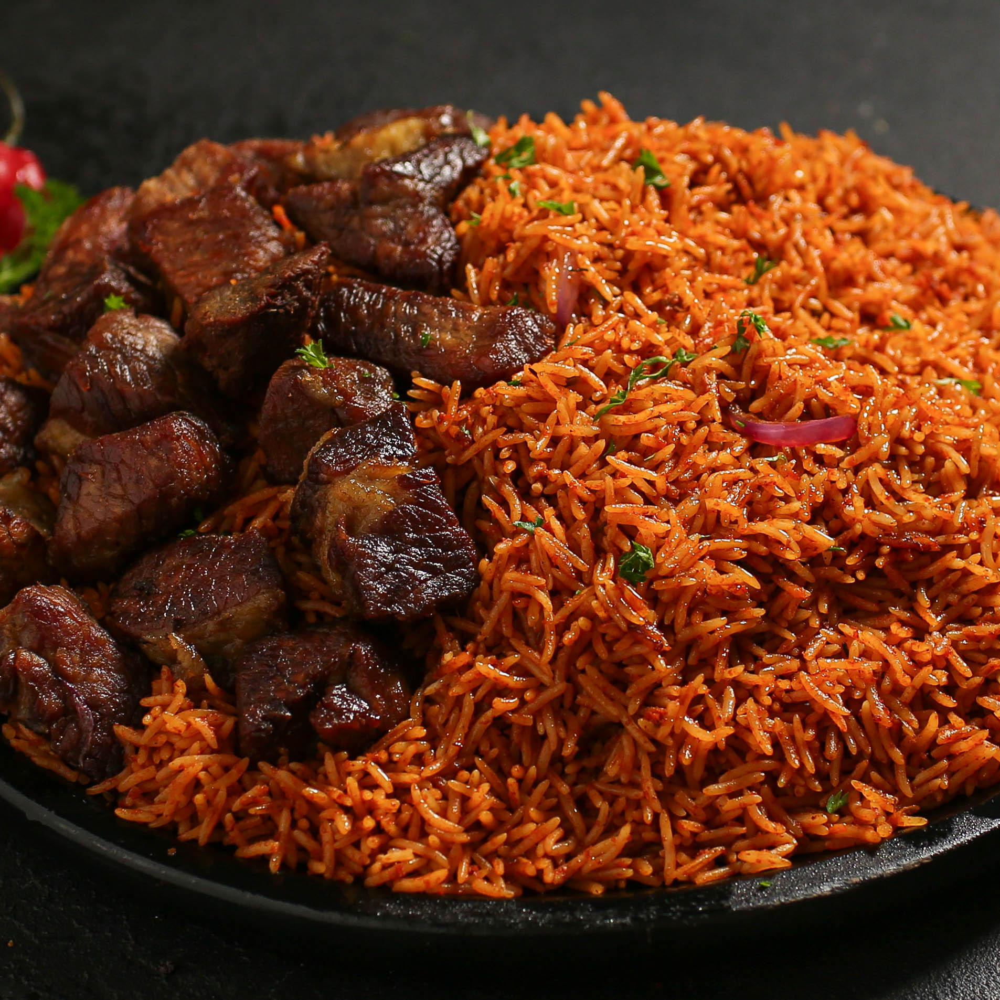
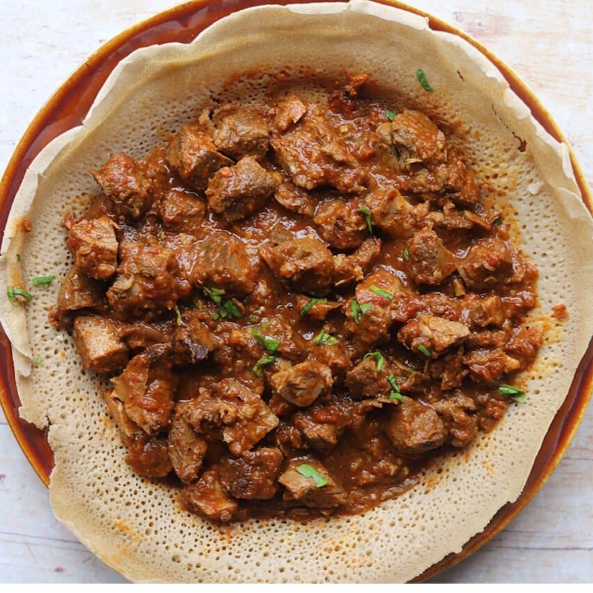
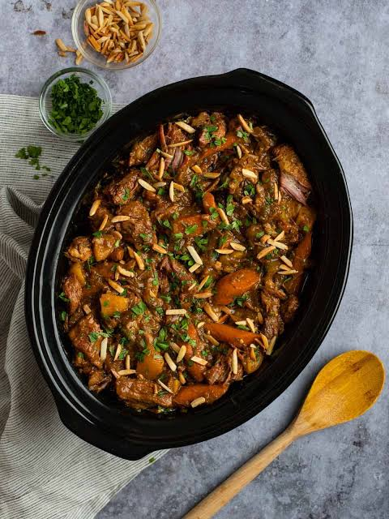
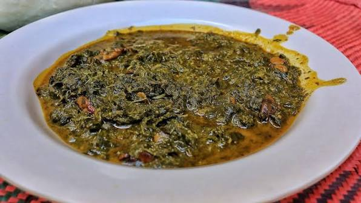

Jollof Rice
A famous tomato rice dish from Nigeria and Ghana.
Ingredients
- 2 cups rice
- 3 tomatoes
- 1 onion
- 2 tbsp oil
Cooking instructions
- Blend the tomatoes and onion.
- Fry the mix in oil.
- Add rice and water, then cook until soft.

Injera
A traditional Ethiopian flatbread made from teff flour.
Ingredients
- 2 cups teff flour
- 1 cup water
- 1 tsp salt
Cooking instructions
- Mix the teff flour, water, and salt to form a batter.
- Let the batter ferment for 24-48 hours.
- Cook the batter on a griddle to make flatbreads.

Tagine
A slow-cooked stew from Morocco, made with meat, vegetables, and cumin.
Ingredients
- 1 lb lamb or chicken
- 1 onion
- 2 tomatoes
- 1 tsp cumin
Cooking instructions
- Dice the onion and tomatoes.
- Brown the meat in a tagine or heavy pot.
- Add the vegetables and spices, then simmer for 2 hours.

Isombe
A Rwandan dish made from pounded cassava leaves.
Ingredients
- 4 cups cassava leaves
- 1 onion
- 2 tbsp palm oil
- 1 tsp salt
Cooking instructions
- Wash and pound the cassava leaves.
- Boil them until soft.
- Add the onion, oil, and salt, then simmer.